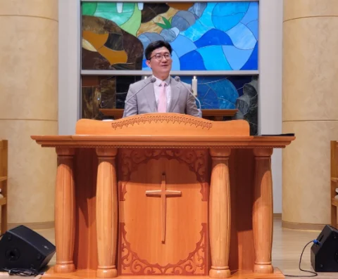
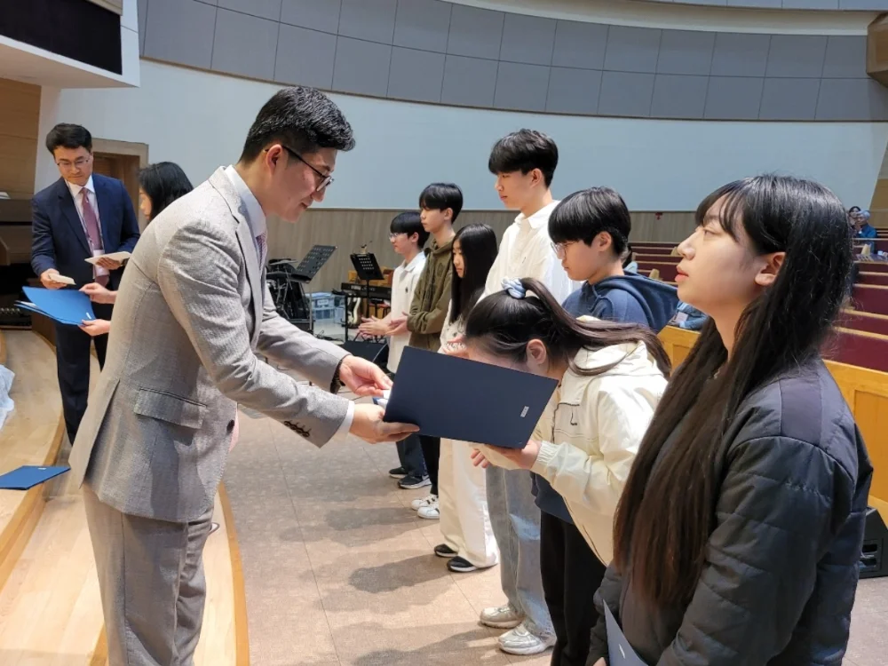
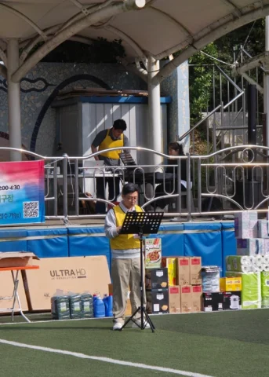

함께하는 믿음MY SAMGOE
나의 메뉴
함께 기도하고, 함께 섬기는 우리
다음 수요조찬기도회일정을 확인하고 있습니다매월 첫 주 수요일 오전 7시 기도회로 섬기는 마음섬김 신청신청하기 한 달, 한 교회, 한 마음기도회 전체 일정일정 보기 로그인하고 내 정보 확인로그인함께 기도하고, 함께 섬기는 우리
다음 수요조찬기도회일정을 확인하고 있습니다매월 첫 주 수요일 오전 7시 기도회로 섬기는 마음섬김 신청신청하기 한 달, 한 교회, 한 마음기도회 전체 일정일정 보기 로그인하고 내 정보 확인로그인


기도에서 시작되는 지역의 변화
예배와 나눔, 이웃을 향한 발걸음